Hello there. This is the first time I'm doing a writeup so excuse if things aren't well explained or poorly structured.
So I'll do my best to explain every task along with plenty of screenshots/snippets so you can see exactly what's going on and how to get there on your own.
This writeup will skip most exercises where you simply use the help function but I can answer some with a different take or the ones that were more trouble for me.
Anyway let's get started.
First of all let's download the files that the room provides and put them in a folder for us to work with.
To start up RE-ing generally you'll be using radare2 with this command
$ radare2 -d <binary-name>
radare2 can also be shortned to just r2.
Note: Binaries must be executable. Although the files that the room provides are ready to be used, if they weren't, you'd have to add permissions in order for you to start RE-ing.
$ chmod +x <binary-name>
All of these can be solved with
$ r2 -h
Let's load up the example1 binary.
$ r2 -d example1 [0x00000530]> aaa [0x00000530]> afl
0x560c5a7c5530 1 42 entry0 0x560c5a9c5fd8 1 4132 reloc.__libc_start_main 0x560c5a7c5560 4 50 -> 44 sym.deregister_tm_clones 0x560c5a7c55a0 4 66 -> 57 sym.register_tm_clones 0x560c5a7c55f0 5 50 entry.fini0 0x560c5a7c5520 1 6 sym.imp.__cxa_finalize 0x560c5a7c5630 4 48 -> 42 entry.init0 0x560c5a7c54f8 3 23 sym._init 0x560c5a7c56e0 1 1 sym.__libc_csu_fini 0x560c5a7c56e4 1 9 sym._fini 0x560c5a7c566b 1 7 sym.secret_func 0x560c5a7c5680 4 93 sym.__libc_csu_init 0x560c5a7c5660 1 11 main
Although you could easily count the functions one by one I wasn't satifised doing this way.
Thankfully, radare2 provides an easy way to count number of lines by simply appending "~?" to any command. There's also another way which personally I find better since you can use this for other bash commands.
[0x133713371337]> afl | wc -l
For some reason, the count that I got is 1 more than the answer. I don't know what caused this, either one of the functions is not considered as a function, or the answer was based on a more recent version of radare2 where the analysis counts less functions or something like that.
When you're answering this, don't include sym.
Also, whenever you're doing a RE challenge, be on the lookout for functions that are in exactly this format. (no additional underscores or strings)
sym.user_func
A cool tip whenever you're searching for a string is to hide the excess information that you might not want at first.
Appending qq to most r2 commands will greatly reduce the amount of information shown at once.
This applies really well to the command that shows strings and it's very useful to know.
[0x133713371337]> ___qq
This answer really confused me at first and I spent a good chunk of time looking through every option in the p? list
Basically dissassembly means show assembly instructions or opcodes.
Which then we can see the answer by looking at "disassemble N opcodes (pd) or N bytes (pD)"
Unfortunately this command doesn't seem to work for me :(
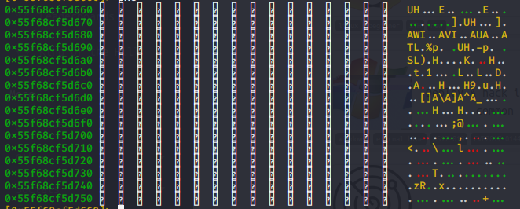Anyway this command is very sneakily hidden and I couldn't find it without googling it.
It can be found by using "px?"
Let's finally look at some assembly code!
As usual whenever you're loading up a different binary, remember to run aaa first.
[0x133713371337]> pdf @ main
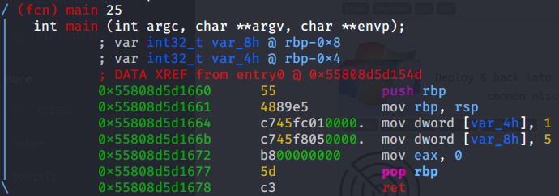
If you've done the suggested room, Intro to x86-64, you'll have a good idea what's happening here. An integer is assigned to each of these variables, at the lines 3 and 4, and then program finishes its execution. Pretty crazy, right?
If you want to confirm that the values are being assigned and you want to print them out, we can use the skills learned in Task 5 - Navigating Through Memory and see what's inside the variables.
[0x133713371337]> s rbp-0x4 [0xfffffffffffc]> px
And, uh oh, I don't like the look of that address. This is because the program hasn't actually started yet. Its process stack, where it holds temporary data such as methods, function parammeters, return addresses and local variables, wasn't initialized yet.
There's no point in running any print functions because there's no meaningful data to show. It's just a bunch of Fs.
Task 8 however will talk about this and it's one of the most important parts of RE-ing.
But first we need to do the Mid-term.
Cool, now we have something to test all our skills up until this point. I won't be skipping any tasks here. Let's load up midterm and start analysing.
$ r2 -d -A midterm
We know how to easily do this now but for the sake of convinience I'll show it again.
[0x133713371337]> afl | wc -l
This one we also know how to do. Show all the strings without any additional details.
[0x133713371337]> izzqq
We'll start off by printing the dissassembly of the secret_func.
[0x133713371337]> pdf @ sym.secret_func
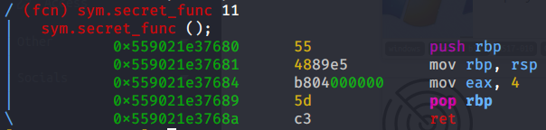
Note: Usually, in x86 systems, EAX (32-bit) register is responsible for the return address. in x86-64, it's RAX (64 bit). Link, if you want learn more about this.
Even without knowing this, you can figure this out since this is the only integer value being used in the function.
Let's look at the dissassembly of the main function.
[0x133713371337]> pdf @ main
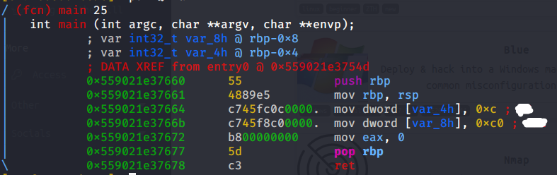
Oh hey, the comments already show us the answers! Nice.
This one is a little tricky, because afl doesn't show functions in sequence of memory. You could compare each function's address but that's a huge pain.
There are different ways you can do this.
This one is probably the way that the creator of the room intended for us to use.
We simply move to the last instruction of the main function and add 1 more byte. Then print our current function. Let's do it.
[0x133713371337]> pdf @ main [0x133713371337]> s 0x55839a01a678 [0x55839a01a678]> s+ 1 [0x55839a01a679]> pdf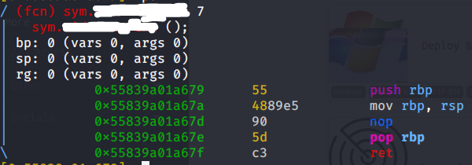
And voilà. The censored bit shows us the answer.
Notice the left address column of the "afl" output. It's presented line by line with addresses being numbered like pages.
Here's where we can use another piping trick.
The "sort" linux command alphanumerically sorts text line by line. With this knowledge we can use afl in conjunction with sort and get the function after main.
[0x133713371337]> afl | sort
And boom! We get the answer with a one-liner!
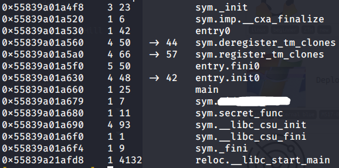This answer is pretty intuitive. Usually commands in r2 have an amount you can specify. Like
[0x133713371337]> pd 2
This will show only 2 lines of dissassembly.
I think you can figure out how do get the answer now.
Phew! That's half of the room done.
Although no exercises in this task require great explaining, this is where you should try playing around with breakpoints on your own.
Tip: For more simple programs, good places to put breakpoints are: the first few lines of main, just before a jump instruction (highlighted as green) and at the end of a user function.
A good habit to get into is combining commands like "dr" and "px @ variable" every couple lines, so you can keep track of all the values and strings.
Does that sound tiring? This is where the Visual Mode might come in handy.
After this task, you could take a shot at trying this room, even if you don't complete it. It's good to always practice more.
This task personally required a bit of research in order to fully understand the basics. And you should probably do it too. Once you're pretty comfortable with the normal Command Line Mode and have a bit of experience, you could try going with Visual Mode. It has a lot of functionality so check the help menu often.
Tip: Once you enter Visual Mode, press "p" twice to bring the Debugging Mode. It's what you'll be using more.
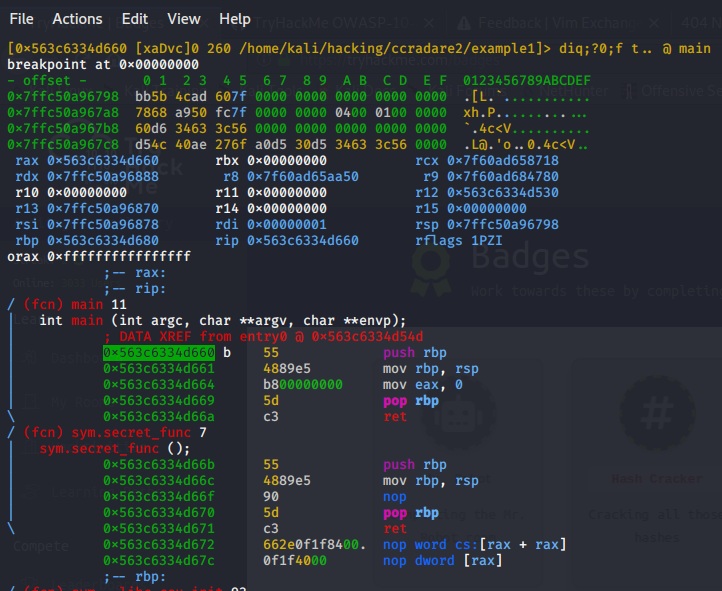Another thing, stepping through lines won't work if you used "s [address]" before. It will just go back to where you were before. You'd have to set a breakpoint before entering Visual Mode, if you want to look at the main function, for example.
I had trouble getting the message to display for me. I'll show you what I've tried and the process to display it.
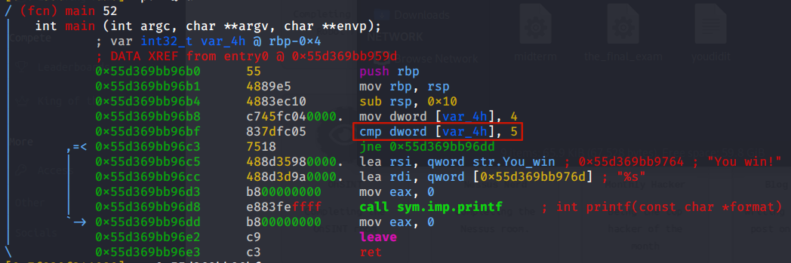First, we'll try to use the command learned in exercise #3 and do a very simple change to jump ahead in memory, the line after the jne instruction. This way the program won't exit out without doing anything and will print the message.
We're gonna target the highlighted line. We should also set up two breakpoints, one where jmp instruction ends and another before the main function ends, so we can confirm that it executes the print function.
[0x7f0d456c6090]> s 0x5628a19236bf [0x5628a19236bf]> wa jmp 0x5628a19236c5 [0x5628a19236bf]> db 0x5628a19236c5 [0x5628a19236bf]> db 0x5628a19236dd [0x5628a19236bf]> dc
Aaand, huh, nothing happened.
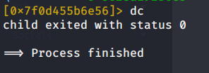radare2 for some reason isn't showing the output of the print function. If it showed up for you, great. Either way we could go farther and learn a bit more about the Write Mode. We'll attempt to change the binary, save it and run it normally. This process, by the way, is called Binary Patching.
Opening with write mode is shown at Task 2, let's run it. Any issues when opening with r2 write mode or the file can be fixed by restarting the terminal. This time instead of changing to a jump instruction, we'll change the value 5 to 4.
Once again, we'll be targeting the highlighted line.
$ r2 -w -A example4 [0x00000580]> s 0x000006bf [0x00000580]> wx 837dfc04
Note: changing int values in assembly instructions is easy with the "wx" command. Look at the second column of the dissassembly view, it's called the encoded assembly instructions. Just like normal assembly instructions, the encoded section is also modifiable. 05 can be changed to 04.
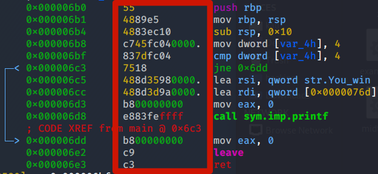We're done, and you can exit radare2. Now we just need to run it!
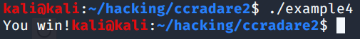There we go. One more task remains.
$ r2 -d -A the_final_exam
[0x133713371337]> pdf @ main
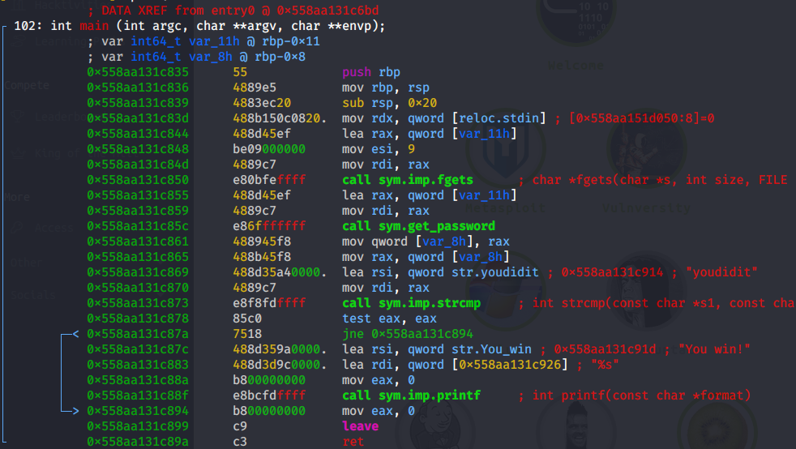
Immediately I can see a string named "youdidit". Very likely the password will contain something related to this.
Let's now assume you're at this point and you don't know what to do. How do I figure out the password? I type in "youdidit" and nothing happens.
Even if you don't understand the assembly code here, we should start by just listing the functions in order and have a rough idea what it does. If you haven't programmed in C, you should also research the functions and see what they do and return.
Now you may be thinking, hmmm, we should look at the get_password function and see what it does.
[0x133713371337]> pdf @ sym.get_password
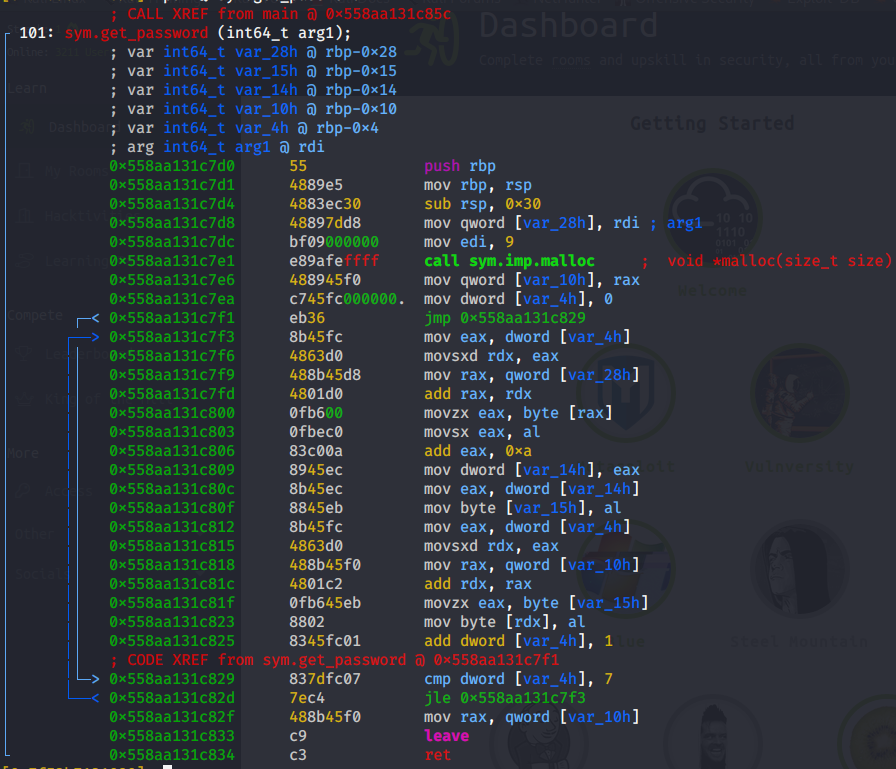
Ugghh, this function looks like such a pain. How do we even begin?!
What I'd recommend is spending about 10 minutes going through that function line by line and see the values that are being added and changed. Maybe an idea will come up, who knows? Just to get a feel for it.
There are two ways we can approach this.
This is arguably the hardest method and requires a lot of knowledge and experience. In no way it's expected for you to do this easily. You could attempt this by slowly and with a lot of patience understand where and what the assembly instructions transfer values, to and from different registers.
We could try comparing the values before and after the get_password and see if we can notice a pattern. The problem with this approach is that we don't know if the function adds values based on some extra element, like your computer's clock, the length of the string, the value of each individual letter. It's an unreliable method but works great with more simple code and it's much faster.
Since the password has something to do with "youdidit", typing it might just do the trick for this to work.
We'll set a breakpoint when the var_8h is assigned and compare it to "youdidit".
[0x133713371337]> db 0x558aa131c865 [0x133713371337]> dc $ youdidit [0x133713371337]> px @ rbp-0x8
Unfortunately, since var_8h was allocated dynamically (using the function malloc on get_password function) it messes up when we try to see it. This isn't what should be displayed.
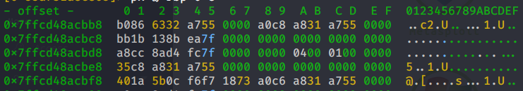Instead we'll take a look at the address of the RAX register. The string is still there until now.
[0x133713371337]> dr
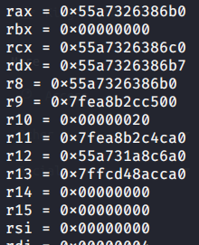
[0x133713371337]> px @ 0x55a7326386b0
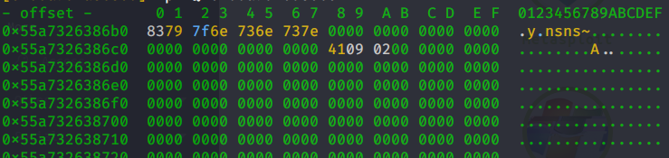
Aha! This looks much better. But that doesn't seem something we can type in a terminal. Did we mess up? If we convert the hexadecimal code to ASCII (remember, ASCII text is just numbers which can be transformed to hexadecimal and vice versa), using this online tool, for example, we get a bunch of nonsense.
8379 7f6e 736e 737e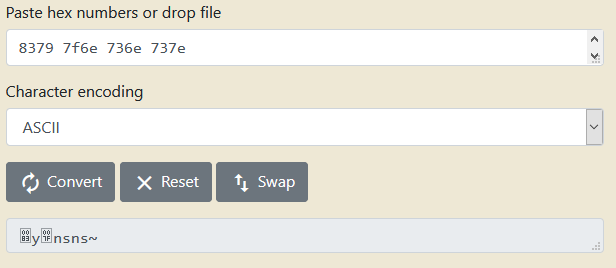
I guess I screwed up. I should try another way. Or do I? *play Vsauce theme*
Let's line up the hexadecimal code of both strings side by side.
[0x133713371337]> px @ 0x55a731a8c914 (address is where the youdidit string is shown in main)
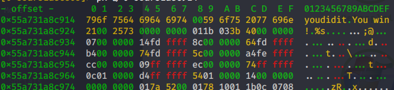
796f 7564 6964 6974 (youdidit) 8379 7f6e 736e 737e (?y?nsns~)
Do you notice a pattern here? This to me screams like one. A hexadecimal calculator can be used to get the difference between the hex values.
(Don't include the spaces)
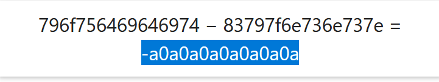a0a0a0a0a0a0a0a
Bingo! This is what the get_password function does! It adds the values for every other character in a string. Now we do the reverse process. If the function adds, we should then subtract that value to the hex value of youdidit and obtain the password!
This is all done in order for the get_function to transform the answer to youdidit so that when it compares it will display the victory message.
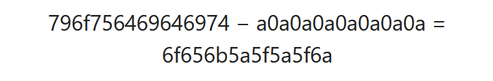And finally getting this value back to ASCII
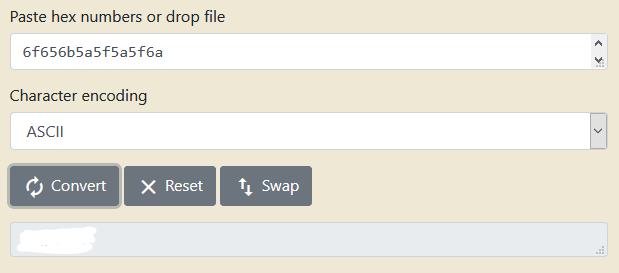And of course we can double check it by running the program.
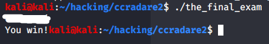Yay!
We're finally done! I hope you learned something in this writeup. Honestly, I don't know what final message I should say here, so... yeet!
Hope you had fun (or not lol) learning about the challenging world of RE. The world could always use more RE writeups. You could check a similar writeup here. Not the same challenge but it teaches the basics more in depth.